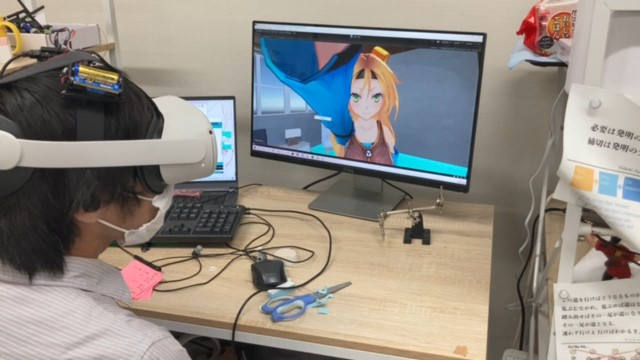
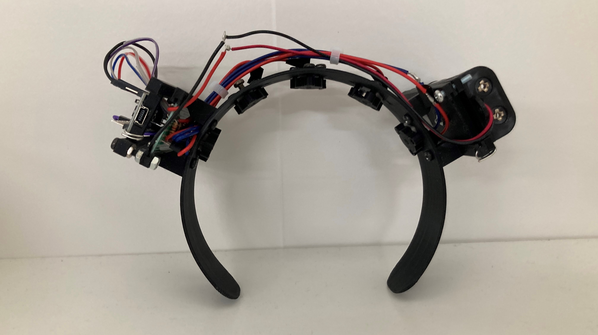

VR空間で撫でられる体験をより臨場感をもって体験するために、振動子をカチューシャ型のデバイスに組み込み、映像とともに提示した．


デバイスの形状はカチューシャ型を採用し、5つの振動子（mini vibration moter 2.0mm）を等間隔に配置した。映像内で撫でられている位置と対応した振動子が強度および振動パターンを変化させることで撫でられる体験を与える。振動のパタンと映像を組み合わせることで触仮現運動の提示を体験できる。
振動子と映像間に動作ずれをつくりだすことで重みや他の要素を疑似的に知覚できるような仕組みを作りたいと考えている。また振動の効果的な伝播を可能にするアタッチメントを検討している。